A description of the manuel de codage
JSesh Demonstration File
This file (allmdc.gly) demonstrates Jsesh capabilities
as far as the Manuel de Codage is concerned
It contains tests for the usual constructs
Its also a tutorial about the Manuel de Codage
Jsesh Is a work in progress.
Description of the manuel de codage
The Manuel de codage is a system for describing hieroglyphic texts in ASCII characters
It's the result of the work of an international working group, and it's described in :
 J. Buurman, N. Grimal, M. Hainsworth, J. Hallof, D. van der Plas, Inventaire des signes hiéroglyphiques en vue de leur saisie informatique, Paris, 1988 (first ed. 1984)
J. Buurman, N. Grimal, M. Hainsworth, J. Hallof, D. van der Plas, Inventaire des signes hiéroglyphiques en vue de leur saisie informatique, Paris, 1988 (first ed. 1984)
The manuel was inspired by a software called GLYPH, by J. Buurman ; the first versions of glyph can be traced back to the early 70s
Most hieroglyphic editors use a more or less modified version of the manuel, notable modifications have been proposed in 1994 by H. van den Berg for winglyph
In the Pisa 2002 Table ronde Informatique et Égyptologie, M.-J. Nederhoff has proposed a very interesting Revised Encoding System, which addresses some of the manuel' shortcomings.
We plan to take it into account later on.
Simple manuel de codage codes
The basic principle of the manuel is that a sign is described by its code in Gardiner's fonts.
For example, 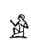 is "A1" and 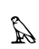 is "G5"
Variant signs (those with a "*" in Gardiner's list) are indicated by uppercase letters after the code
For instance, 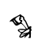 is "A14A", vs. 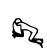 which is "A14"
A number of signs can also be described by their phonetic value.
For instance, 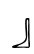 can be coded "b".
A complete list of these will be given in JSesh's help.
The codes for the egyptian consonnants are the following :
| A | A |
i | i |
y | y |
a | a |
| w | w |
b | b |
p | p |
f | f |
| m | m |
n | n |
r | r |
l | l |
| h | h |
H | H |
x | x |
X | X |
| z | z |
s | s |
S | S |
q | q |
| k | k |
g | g |
t | t |
T | T |
| d | d |
D | D |
For uniliteral signs, there are two special codes for some frequent variants :
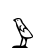 is coded "w", and 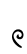 is coded "W"
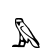 is coded "m", and 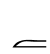 is coded "M"
To these codes, the manuel adds also two groups :
"nTrw" for 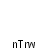
"nn" for 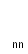
Grouping of signs
Grouping hieroglyphs is done with a few simple operators :
 "-" separates cadrats. For instance, 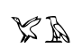 is coded "G41-A"
"-" separates cadrats. For instance, 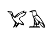 is coded "G41-A"
 ":" stack groups. For instance, 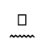 is coded "p:n"
":" stack groups. For instance, 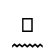 is coded "p:n"
 "*" group signs on the same level in a cadrat.
"*" group signs on the same level in a cadrat.
For instance, 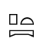 is coded "p*t:pt"
More complex groups can be built using parenthesis :
 pA-A-N16:N23*Z1-n:(x:t)*U30-xAst:t*Z1
pA-A-N16:N23*Z1-n:(x:t)*U30-xAst:t*Z1
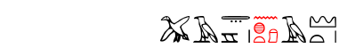
Special signs
 a cadrat-long space is coded ".." :
a cadrat-long space is coded ".." :
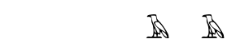 A-..-A-
 a half-cadrat-long space is coded "." :
a half-cadrat-long space is coded "." :
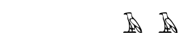 A-.-A-
 black punctuation point is coded "O" :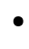 is O:.
black punctuation point is coded "O" :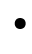 is O:.
 red punctuation point is coded "o" :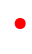 is o:.
red punctuation point is coded "o" :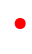 is o:.
Unknown codes
When JSesh doesn't know a sign, it will replace it in display by its code e.g. :
 A300-n:A300*A1 gives 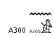
A300-n:A300*A1 gives 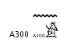
Please don't abuse this feature.